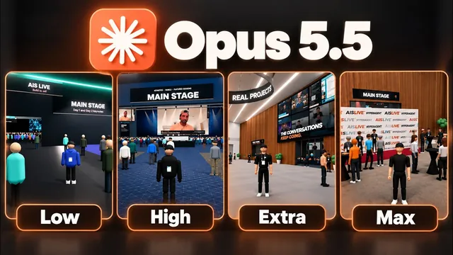

Opus 5.5를 effort 단계별로 전부 테스트했다

원본 영상 보기 →
- 가장 비싼 설정이 가장 좋은 결과는 아니다
- effort를 올리면 달라지는 건 '상호작용의 깊이'였다
- 기본값은 Medium, 올리는 기준은 '뒤져야 할 자료의 양'
한 줄 요약
Nate는 Opus 5.5에 같은 프롬프트를 넣고 effort 레벨 6단계(Low, Medium, High, Extra, Max, UltraCode)를 전부 돌려 결과물, 시간, 비용을 비교했다. 가장 비싼 Max가 아니라 비용이 그 절반 정도인 Extra가 1등이었다.
전체 내용 정리
같은 과제를 effort 6단계로 돌리고 비용·토큰·검사·질문 횟수까지 쟀다
Nate는 모든 에이전트에 같은 목표 프롬프트를 줬다. 과제는 완전히 온라인으로 치른 행사 'AIS Live'의 녹화본(Frame.io 폴더, 105GB)을 살펴보고, 여러 방·세션·무대를 갖춘 실제 오프라인 컨퍼런스처럼 3인칭 시점으로 돌아다닐 수 있는 현실적인 3D 월드를 만드는 일이었다. 이미지·영상 생성 도구와 Nate 자신의 AI 운영체제 프로젝트 기능도 자유롭게 쓰게 했고, 창의성·디자인·물리 효과·전반적인 느낌으로 평가하겠다고 적었다. 실행은 목표(goal) 방식으로 걸어두고 중간에 개입하지 않았다. 결과물 품질에 더해 실행 시간, API 요금 기준 비용, 총 토큰 수, 검사(check) 횟수, 작업 중 질문 횟수를 함께 기록했다.
Low와 Medium: 싸고 빠르지만 밋밋한 결과에서 '제대로 돌아가는' 월드로
Low는 16분 43초 동안 돌았고 비용 3.91달러, 토큰 191,000개, 검사 22번, 질문 0번이었다. 지도와 실시간으로 표시되는 다른 참가자, 1일 차·2일 차 일정은 갖췄지만 AIS Live 로고나 회사 색상이 들어가지 않았고, 강연장 화면은 영상이 아니라 정지 이미지였으며, 특정 방향으로 가면 사람들이 사라지거나 심하게 끊겼다. Medium은 1시간 13분, 12.44달러, 토큰 49만 개, 검사 23번, 질문 0번이었다. 브랜드 가이드라인을 적용해 색감이 살아났고, 워크숍 룸과 엑스포 부스에서 실제 행사 녹화 영상이 재생됐으며, 다가가면 팔을 들어 인사하는 NPC, 올라갈 수 있는 메인 무대, 공항 라운지 같은 VIP 라운지가 생겼다. 배경 도시는 Low에서는 시카고였고 Medium에서는 가상의 도시처럼 보였다.
High: Medium보다 빠르게 끝나면서 완성도는 크게 오른 유일한 '질문하는' 모델
High는 약 1시간 7분으로 Medium보다 조금 빨랐고, 비용 16.31달러, 토큰 509,000개, 검사 22번이 들었다. 6번의 실행 중 Nate에게 질문을 한 유일한 모델이었다(1번). 로딩 화면이 전체 중 가장 좋았고, 입구에는 연사별 깃발과 자동으로 열리는 유리 슬라이딩 도어가 있었다. 방문한 장소 수를 보여주는 패스포트, 손목 밴드를 받아야 들어가는 VIP 구역, DJ 부스까지 갖춘 VIP 애프터 파티, 발표자의 실제 자막이 뜨는 메인 무대도 구현됐다. 약간의 버그와 글리치는 있었지만 Nate는 Low는 괜찮았고, Medium은 더 나았고, High는 훨씬 좋았다고 정리했다.
Extra와 Max: 상호작용이 풍부해진 Extra, 가장 비싸고 버그가 많았던 Max
Extra는 1시간 30분, 25.92달러, 토큰 733,000개, 검사 34번, 질문 0번이었다. NPC와 대화할 수 있었고, 워크숍 좌석에 앉았다 일어설 수 있었으며, 조종하는 캐릭터가 Nate의 썸네일 사진을 바탕으로 만든 듯 그를 닮아 있었다. 레드카펫 포토존, 리소스 라이브러리, 실제 거래 3건 소개, 워크시트로 가격 책정을 따라 해보는 VIP 방도 있었다. 다만 지도 설명이 이전보다 덜 친절했고 VIP 애프터 파티는 없었다. Max는 2시간 28분, 50.38달러, 토큰 118만 개로 가장 오래 걸리고 비쌌으며, 도중에 자동 압축(compaction)이 일어났고 검사는 51번 했다. 부스 디자인은 Nate가 본 것 중 최고였고 에스컬레이터, 메인 무대 주제 전환, 사진 저장 기능도 있었지만, 걷는 조작감이 나빴고 의자에 앉을 수 없었으며 화면이 글리치와 함께 멈추는 버그가 있었다.
UltraCode: 빠르고 합리적인 비용이었지만 동적 워크플로우가 한 번도 돌지 않았다
UltraCode는 1시간 35분, 18.69달러, 토큰 606,000개, 검사 42번, 질문 0번으로 Max보다 훨씬 빠르고 쌌다. 걷는 느낌이 가장 현실적이었고, 지도 설명이 친절했으며, 방에 들어가야 영상이 재생되는 방식과 촬영한 사진을 실제로 다운로드하는 기능이 있었다. 반면 워크숍 좌석에 앉을 수 없었고 화면이 끊기는 구간도 있었다. Nate는 최근 UltraCode가 버그가 있는 것처럼 느껴졌다고 말했다. UltraCode는 추가 노력을 들여 더 동적인 워크플로우로 일을 처리하는 모드인데, 세션 로그를 전부 확인해보니 동적 워크플로우를 하나도 가동하지 않았고, 이것이 Claude Code 하네스 버그인지 Opus 5.5와 UltraCode의 호환성 문제인지는 확실하지 않다고 했다. 또한 6번의 실행 모두 서브 에이전트를 한 번도 쓰지 않았고, UltraCode는 내부적으로 Extra 수준을 사용한다고 설명했다.
숫자 비교와 결론: 1등은 Extra, 평소 업무는 Medium이면 충분
가장 싼 Low와 가장 비싼 Max의 비용 차이는 12.9배, 검사 횟수 차이는 2.3배였고, 6번 실행의 총비용은 127달러였다. 실행 시간·API 비용·토큰·검사 횟수는 effort를 올릴수록 대체로 함께 늘어나 차트 자체에는 놀라운 점이 없었지만, 결과물 순위는 예상과 달랐다. Nate는 최종 후보로 High와 Extra를 놓고 비교한 끝에 Extra를 1등으로 골랐다. Extra는 Max 대비 실행 시간과 비용이 절반 정도였고, Max는 이 작업에 과했으며, High는 프롬프트를 한두 번만 더 줬다면 만족할 수준이었다고 평가했다. Anthropic은 Opus 5.5 프롬프트 작성 가이드 글에서 Medium으로 시작해 필요에 따라 올리거나 내리라고 권하고, Nate도 평소 지식 업무 대부분은 Medium이면 충분하다고 했다. 다만 이번 과제는 방대한 영상과 프로젝트 자료를 뒤져 경험과 이야기를 만들어야 해서 추론이 많이 필요했고, 세련된 앱이나 월드를 만든다면 Extra로 시작해 Extra로 계속 다듬겠다고 결론 내렸다.
핵심 인사이트
- 가장 비싼 설정이 가장 좋은 결과는 아니다: Max는 Extra보다 비용이 약 2배, 시간이 1시간 가까이 더 들었고 검사도 51번이나 했지만 버그가 더 많았다. effort는 '높을수록 좋다'가 아니라 작업에 맞는 적정선이 있다.
- effort를 올리면 달라지는 건 '상호작용의 깊이'였다: Low는 정지 이미지, Medium은 실제 영상 재생, High·Extra는 문·손목 밴드·좌석·대화 같은 상호작용이 붙었다. 결과물의 기본 골격은 비슷했고 디테일과 완성도가 레벨을 갈랐다.
- 기본값은 Medium, 올리는 기준은 '뒤져야 할 자료의 양': Anthropic 권고와 Nate의 경험이 같다. 방대한 자료를 읽고 종합해 하나의 결과물로 엮는 작업에서만 High~Extra로 올릴 가치가 있다.
오늘 당장 해볼 것
- AI 자동화를 맡긴 업체나 담당자에게 "이 작업에 쓰는 모델과 effort 레벨이 뭔지, 한 번 실행에 비용이 얼마인지" 물어서 업무별로 적어둔다.
- 문의 분류·요약 같은 반복 업무는 Medium으로 충분한지, 자료를 대량으로 읽어야 하는 업무만 높은 레벨로 돌리도록 나눠달라고 요청한다.
- 중요한 업무 하나를 골라 두 가지 effort 레벨로 한 번씩 돌려달라고 하고, 결과물·소요 시간·비용을 표로 나란히 비교해 적정 레벨을 정한다.